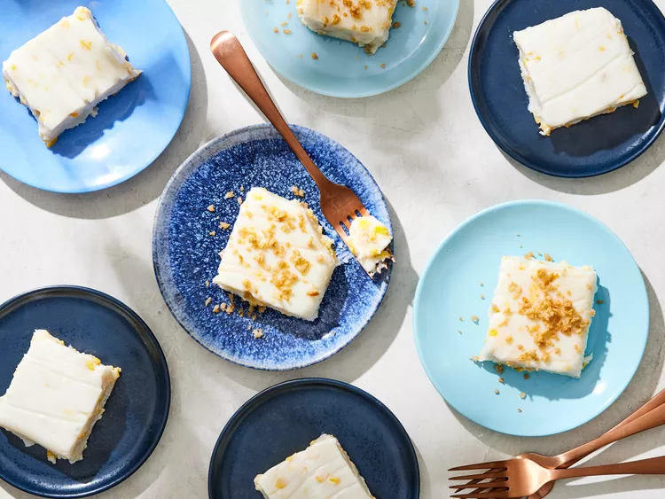
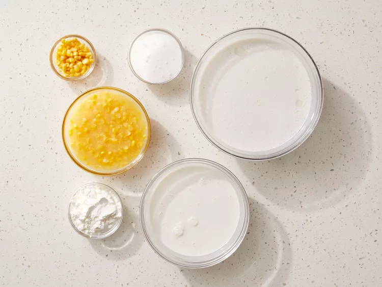
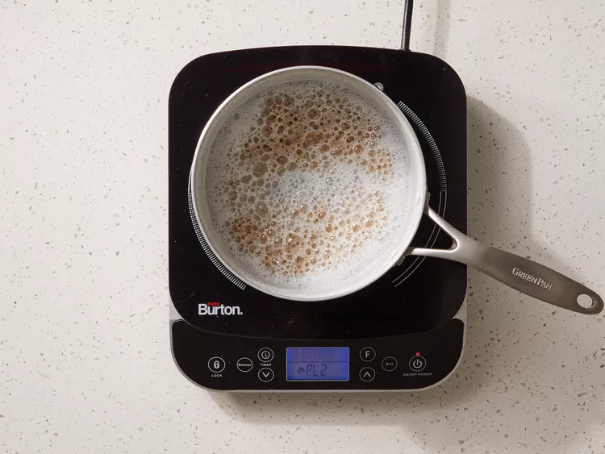
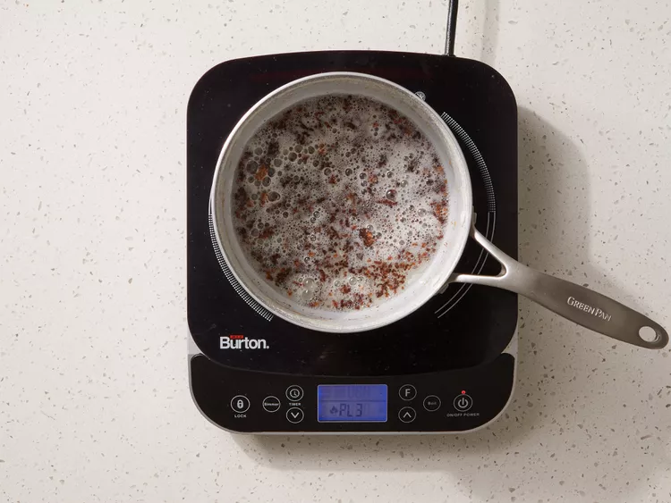
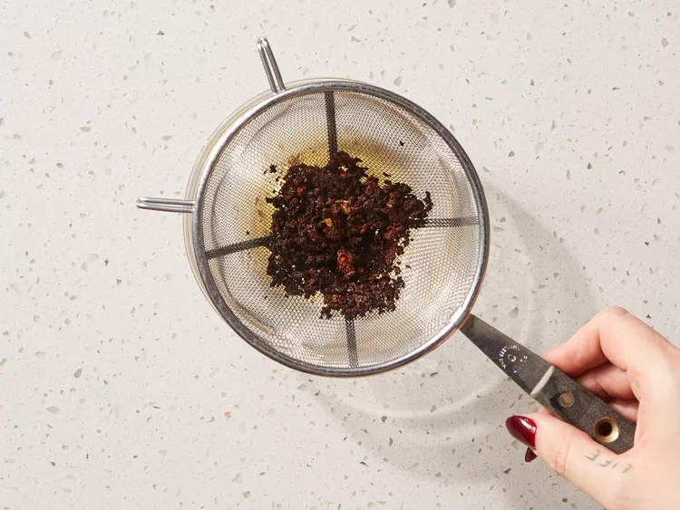
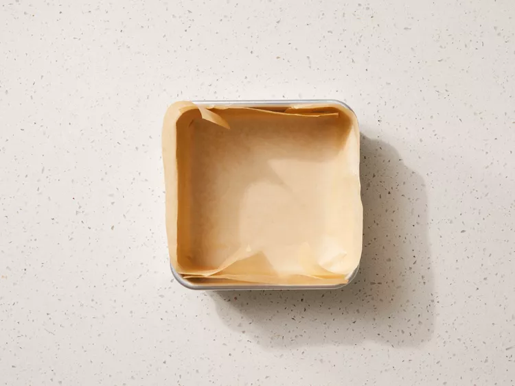
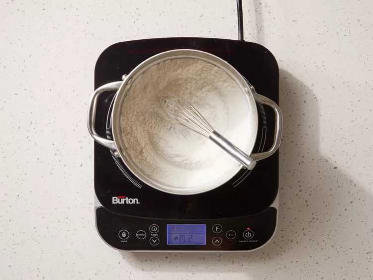
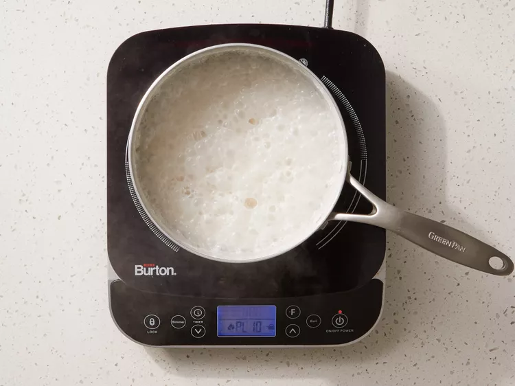
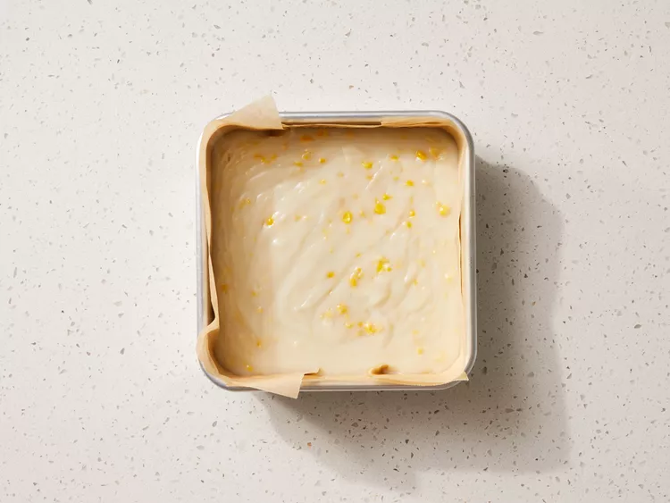
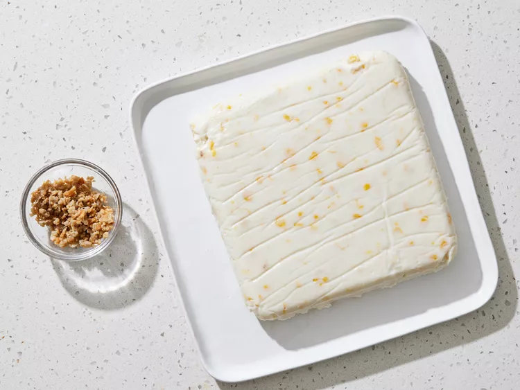

Maja Blanca
Maja blanca is a Filipino coconut pudding topped with kalik which is a sweet, crumbly topping made from coconut milk. Serve this creamy delicacy for dessert or as a snack.

Prep Time: 15 mins
Cook Time: 30 mins
Additional Time: 2 hrs
Servings: 12
What Is Maja Blanca?
Maja blanca is a Filipino dessert that has a gelatin-like consistency made with coconut milk and topped with latik (browned coconut cream curds).
Can I Freeze Maja Blanca?
We do not recommend freezing Maja Blanca. The freezing and defrosting process will compromise the texture of this coconut pudding.
How to Store Maja Blanca
If you have leftover Maja Blanca (unlikely!), simply cover and store pudding and latik in separate containers in the refrigerator for up to five days.
Ingredients
Latik Topping:
- 1 (14-ounce) can full-fat unsweetened coconut milk (5 - 20% fat)
Coconut Pudding:
- 1/2 cup white sugar
- 1/2 cup cornstarch
- 2 (14-ounce cans) unsweetened coconut cream
- 3/4 cup canned cream-style corn
- 1/4 cup fresh or frozen corn kernels (Optional)
Directions
- Gather ingredients.

- To make the latik: Bring coconut milk to a boil in a large nonstick skillet over high heat. Continue to boil, stirring occasionally, until oil begins to separate from the milk, about 5 minutes.

- Reduce heat to medium. Continue to cook, scraping the bottom of the skillet regularly with a heatproof spatula until only golden brown residue and oil is left, about 15 minutes. It will look a bit like ground meat, this is normal.

- Strain mixture to separate coconut solids from the oil. The coconut solids are the latik and will be served with the pudding. Reserve the oil for another use. Cover and chill the latik until serving time.

- Line an 8-inch square baking pan with parchment paper, extending the paper up two sides of the pan. Set aside.

- To make the pudding: Whisk sugar and cornstarch together in a medium saucepan.

- Stir in coconut cream, cream-style corn, and corn kernels, if using. Bring to a boil over high heat, stirring constantly, about 5 minutes. Reduce heat to medium. Continue to cook and stir until mixture is thick and bubbly, 2 minutes.

- Pour corn mixture into the prepared pan. Cover and refrigerate until chilled, at least 2 hours or up to 24 hours before serving..

- Invert pudding carefully onto a serving plate. Remove parchment and discard. Cut into 12 slices. Remove latik from the refrigerator. Chop finely, if desired. Sprinkle latik over each slice.
